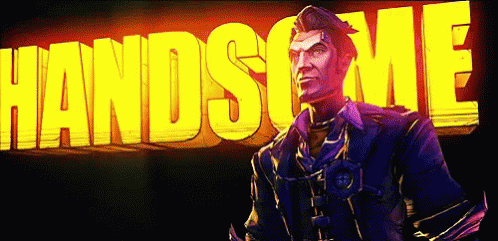
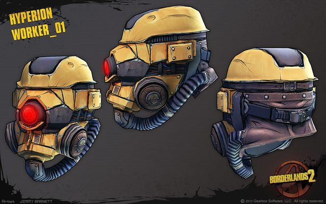

The Fall of Handsome Jack

Our "Oh so Mighty" leader Handsome Jack has been defeated by the savages from sanctuary, exectuted by the bandit Lilith herself.
Betrayed by his own daughter and friends only with his Diamond Pony "Butt Stallion" Jack died the death of a Hero who tried to save the world,
and failed because the world didn't want to be saved, so today we mourn, but tomorrow we'll take action and set our objectives to completely obliterate
the savages that killed our God Handsome Jack.
The Hyperion Helmet

The last issue of the hyperion helmet is craaazy, this new has a full head protection instead of the face-only that we had before,
it also has a visor that lets us see everything through 4k, fuck it 10k resolution lens that also have a bedazzling 11.4x zoom courtesy of our one and only Fremington,
perfect for using the longbow sniper. The Hyper Helm also has an integrated satellite communication system, aaaand air filtering technology,
As they say "Only the Best and Brightest for Hyperion's Mightest".